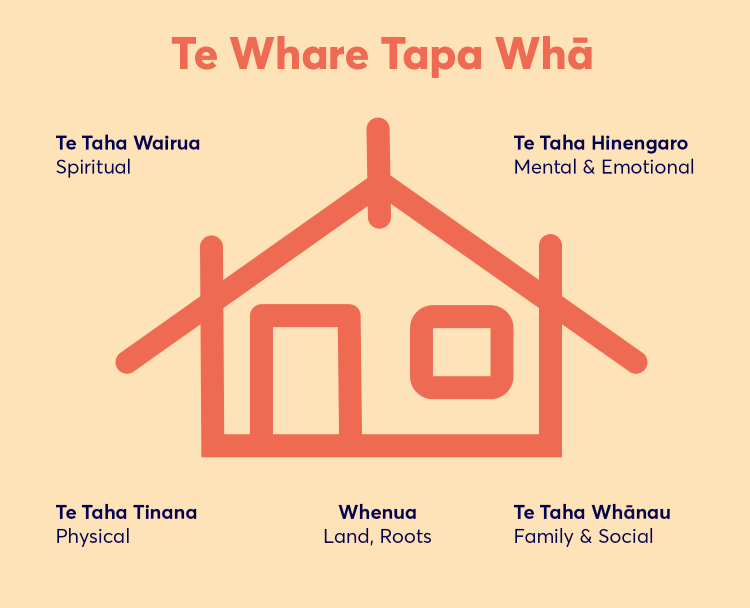

Te Whare Tapa Whā:
31 January 2025
◦ What is Te Whare Tapa Whā:
Te Whare Tapa Whā is the concept that our individual health and wellbeing can be compared to the four walls of a Wharenui (Meeting house). These 4 walls or pillars are metaphors for elements of our wellbeing and can be described as:
- Taha Tinana (Physical Wellbeing)
- Taha Whānau (Family & Social Wellbeing)
- Taha Hinengaro (Mental & Emotional Wellbeing)
- Taha Wairua (Spiritual Wellbeing)
The final element of this structure is the Whenua (land, roots) and this represents the foundation that we build our health and wellbeing upon.
When we take time to care for these 4 pillars we are acting to balance our overall wellbeing. Below is my Te Whare Tapa Whā plan to manage and balance my own health and wellbeing:
Wellbeing Plan
| Wall | Activities |
|---|---|
|
Taha Tinana (Physical Wellbeing) |
|
|
Taha Whānau (Family Wellbeing) |
|
|
Taha Hinengaro (Emotional and Mental Wellbeing) |
|
|
Taha Wairua (Spiritual Wellbeing) |
|
|
Whenua (Interconnections to the land and environment) |
|